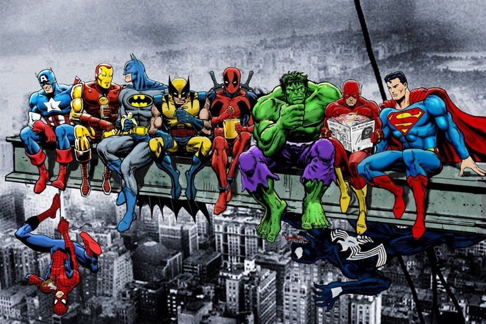

Top 7 Marvel Movies (Paul Bettany)
- Black Panther (2018)
- Guardians of the Galaxy (2014)
- Iron Man (2008)
- Thor: Ragnarok (2017)
- Captain America: Civil War (2016)
- Avengers: Endgame
- The Avengers (2012)
Marvel Movie Facts
-
There's a very strange reason why Captain America isn't eating in
a post-credits scene of The Avengers.
- Agent Coulson wasn't even supposed to have a name.
- Thor: Ragnarok has a much different title in Japan.
-
Maria's call sign in Captain Marvel references a possible future
MCU hero.
- Doctor Strange was almost a horror movie.
-
The first person to play Ant-Man onscreen appears in the first
movie—and it's not Paul Rudd.
-
The war rhinos in Black Panther were played by really big horses.
-
Robert Downey Jr. snuck some tasty props onto the Avengers:
Endgame set.
-
The villain of Spider-Man: Far From Home almost played the hero
instead.
- Peter Quill's ship is named after an '80s icon.
- The X-Men almost crossed over with Captain America.
-
An Oscar winner scored Marvel creator Stan Lee's dream role.